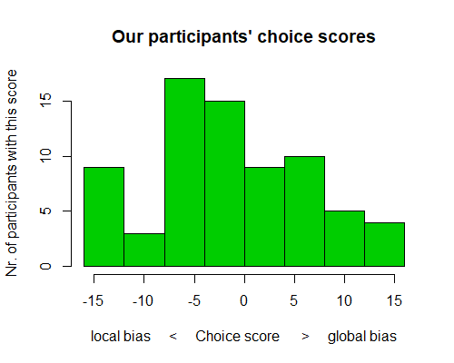
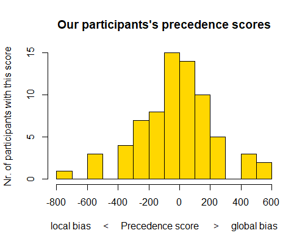

<!DOCTYPE html>
<html>
  <head>
    <title>KIM</title>
    <!-- Importing all necessary scripts and sheets -->

    <!-- General jsPsych script and general jsPsych css stylesheet -->
    <script src="jspsych-6.2.0/jspsych.js"></script>
    <link href="jspsych-6.2.0/css/jspsych.css" rel="stylesheet" type="text/css">

    <!-- Specific jsPsych plugins used in the experiment -->
    <script src="jspsych-6.2.0/plugins/jspsych-html-keyboard-response.js"></script>
    <script src="jspsych-6.2.0/plugins/jspsych-html-button-response.js"></script>
    <script src="jspsych-6.2.0/plugins/jspsych-resize.js"></script>
    <script src="jspsych-6.2.0/plugins/jspsych-fullscreen.js"></script>
    <script src="jspsych-6.2.0/plugins/jspsych-image-keyboard-response.js"></script>
    <script src="jspsych-6.2.0/plugins/jspsych-survey-multi-choice.js"></script>

    <!-- Script needed to run the study with a jatos server; is provided automatically by Jatos when setting the study up -->
    <!-- IMPORTANT: not needed to just run the study in the browser, as this script is currently set up to do (see very end of script) -->
    <!-- <script src="/assets/javascripts/jatos.js"></script> -->

  </head>
  <body></body>
  <script>

// README

// The experiment can be thought of as a slideshow with no turning back possible
// Slides move on by themselves (when a participant needs to see multiple slides during a task), or after a participant has given a response

// The experiment contains only 1 section: KIMCHI
// Each section consists of segments
// Segments may be a single "slide" (for example with a single question) or may be a whole task which will display even hundreds of single slides before it is finished and the next segment is called

// What I call "segments" is NOT equivalent to jsPsych-plugins, since one segment may employ multiple jsPsych-plugins
// A task-segment for example may use an image-response-plugin and a html-response plugin


// THE EXPERIMENT, SESSION 1

// Timeline variable, contains all segments that are then called in chronological order
// Segments are pushed into the array in order from top to bottom
	var timeline = [];
// Segment to give people time to prepare their fingers for the trial after the instructions
    var prep_time_keyboard = {
      type: 'html-keyboard-response',
      stimulus: '',
      choices: jsPsych.NO_KEYS,
      trial_duration: 1000
    }


////////// KIMCHI //////////////////////////////////////////////////////////////////////////////////////////////////////////////

// Calculating the display size of Kimchi images, based on the measures and display size of my own laptop:

// 1) Calculate the size of the figure in pixels (full image is larger than figure alone)
// The full Kimchi image is 1080x1920px = 19.05x33.87cm_in_PowerPoint
// The figure height is given as 6.9cm_in_PowerPoint
// 1920px / 33.87cm_in_PowerPoint = 1080px / 19.05cm_in_PowerPoint = 56.69px/cm_in_PowerPoint
// 56.69px/cm_in_PowerPoint * 6.9cm_in_powerpoint = 391.14px
// The figure has a size of 391px

// 2) Calculate the pixels to give to jsPsych so that the figure is displayed in the right cm-size
// If I want to display the FIGURE as 0.59055inch (1.5cm): 0.59055inch * 100px_per_inch = 59.055px of input FIGURE needed
// The full image is (33.87/6.9=) 4.9089 times wider and (19.05/6.9=) 2.7609 times higher than the input figure on it
// (59x59px) * (4.91x2.76) = (289.88x163.04px)
// Conclusion: If I want to display the FIGURE as 1.5 cm, the input IMAGE needs to be 289.88x163.04px


// Defining Kimchi task parameters (not a segment)
	var kimchi_stim_h = 163;  // height of input image in pixel
    var kimchi_stim_w = 290;  // width  of input image in pixel
	var kimchi_blank1_duration = 1000;  // display duration of the first blank in ms
	var kimchi_blank2_duration = 250;   // display duration of the second blank in ms
	var kimchi_original_duration = 250; // display duration of the first stimulus (named "original") in ms

// Fullscreen is turned on, when the participant leaves the fullscreen they would need to make the experiment fullscreen again themselves
  var fullscreen_on = {
    type: 'fullscreen',
    fullscreen_mode: true,
    button_label: 'Go full screen',
    message: '<p>The experiment will switch to full screen mode when you press the button below. <br>If you accidentally leave the fullscreen mode, you can return by pressing F11 (or Fn + F11) on your keyboard. <br><br> Your data will not be stored!</p>'
  };

// Resizing the display: uses the credit card check, to get browser's inch/pixel-ratio to resize the experiment container to display images in the correct size
    var resize = {
      type: 'resize',
      item_width: 3 + 3/8,		// credit card width in inch
      item_height: 2 + 1/8,		// credit card height in inch
      prompt: "<p>Click and drag the lower right corner of the blue box until the box is the same size as a credit card/debit card/library card held up to the screen. It is important that the size is really accurate!<br>Once the box has the exact size of the card, press the button.</p>",
      pixels_per_unit: 100,		// 100 keeps the font at same size, 150 makes font size smaller
      button_label: ['Box has the right size'],
      // additionally stores the following data
      on_finish: function(data){
        data.browserwidth_in_cm = 8.56 / data.final_width_px * window.outerWidth;	// calculate the size of the picture in cm, to tell whether the image was too big to fit onto the screen or not.
        data.browserheight_in_cm = 8.56 / data.final_width_px * window.outerHeight;
        data.outerwidth_in_px = window.outerWidth;		// store the size of the browser in pixel, to later see whether a "blocky" appearance of the rod in the RAF could have made a difference
        data.outerheight_in_px = window.outerHeight;
        data.innerwidth_in_px = window.innerWidth;
        data.innerheight_in_px = window.innerHeight;
      }
    };
    // Now the experiment is set to display 100 pixels of an input image as 1 inch (either the real input size or - if specified - the size defined by stimulus_height and stimulus_width
    // Calculate the pixel dimensions of the images needed to get the correct display size on the screen in inch: Take the desired display size of pictures in INCH, multiply by pixels_per_unit (100) and out come the dimensions in PIXEL that the input image must have, so that it is displayed in the correct INCH-size on all computers.


// 2.1 Instructions for Kimchi
	var kimchi_introduction = {
	  type: 'html-button-response',
	  stimulus: "<p>This is a practice round.<br><br><br></p>" +
          "<p><b>Instructions:</b> You will briefly see an image, which will disappear and be replaced by two images.<br><br>" +
          "<b>></b> If the <b>left</b> image resembles the original image more press <b>'E'</b> <br>" +
          "<b>></b> If the <b>right</b> image resembles the original image more press <b>'I'</b>. <br><br>" +
          "The images will remain on screen until you make a choice. <br>" +
          "Don't hurry, but go with your first instinct.</p>",
	  choices: ['Start practice']
	};

// 2.3 Kimchi practice trials, equal to actual trials, but only 4 figures instead of 32
	var kimchi_practice_trials = {
	    timeline: [
	        // the following four slides constitute one Kimchi-trial
            {
                // first blank
                type: 'html-keyboard-response',
                stimulus: '',
                choices: jsPsych.NO_KEYS,
                trial_duration: kimchi_blank1_duration,
            },
            {
                // original stimulus
                type: 'image-keyboard-response',
                stimulus: jsPsych.timelineVariable('original'),
                stimulus_height: kimchi_stim_h,
                stimulus_width: kimchi_stim_w,
                trial_duration: kimchi_original_duration,
                choices: jsPsych.NO_KEYS,
            },
            {
                // second blank
                type: 'html-keyboard-response',
                stimulus: '',
                choices: jsPsych.NO_KEYS,
                trial_duration: kimchi_blank2_duration,
            },
            {
                // choice-stimulus, two choices (key e for left figure, key i for right figure)
                type: 'image-keyboard-response',
                stimulus: jsPsych.timelineVariable('choice'),
                stimulus_height: kimchi_stim_h,
                stimulus_width: kimchi_stim_w,
                choices: ['e', 'i'],
                prompt: jsPsych.timelineVariable('instruction')
            },
        ],
        // each line of the timeline_variables will trigger one trial, it contains the stimulus and data about the current trial, e.g. which subtype of the Kimchi task it is
        timeline_variables: [
            { original: 'img_kimchi/kimchi_sqtr.png', choice: 'img_kimchi/kimchi_sqsq_trtr.png' , data_original: { test_part: 'kimchi original'}, data_choice: { test_part: 'kimchi comparison', quality: 'real', local: 'e', global: 'i' }, instruction: '<p>Is the left (press E) or the right (press I) image more similar to the original image?</p>'},
            { original: 'img_kimchi/kimchi_trtr.png', choice: 'img_kimchi/kimchi_sqtr_trsq.png' , data_original: { test_part: 'kimchi original'}, data_choice: { test_part: 'kimchi comparison', quality: 'real', local: 'i', global: 'e' }, instruction: '' },
            { original: 'img_kimchi/kimchi_sqsq.png', choice: 'img_kimchi/kimchi_cisq_citr.png' , data_original: { test_part: 'kimchi original'}, data_choice: { test_part: 'kimchi comparison', quality: 'filler', filler_matches: 'globally', filler_matches_side: 'i', instruction: ''} },
            { original: 'img_kimchi/kimchi_trsq.png', choice: 'img_kimchi/kimchi_trtr_crtr.png' , data_original: { test_part: 'kimchi original'}, data_choice: { test_part: 'kimchi comparison', quality: 'filler', filler_matches: 'locally',  filler_matches_side: 'e', instruction: ''} },
        ],
	};

// 2.4 Announce the beginning of the actual task
	var kimchi_task_announcement = {
	  type: 'html-keyboard-response',
	  stimulus: "<p>The previous trials were practice trials, now the tasks phase starts. (~2 min)<br><br><br></p>" +
          "<p><b>Instruction reminder:</b> You will briefly see an image, which will disappear and be replaced by two images.<br><br>" +
          "<b>></b> If the <b>left</b> image resembles the original image more press <b>'E'</b><br>" +
          "<b>></b> If the <b>right</b> image resembles the original image more press <b>'I'</b>.<br><br>" +
          "Don't hurry, but go with your first instinct.<br>" +
          "Press any key to start the trials.</p>",
	  choices: jsPsych.ALL_KEYS
	};

// 2.5 Kimchi actual trials, now data about each trial is provided (e.g. which figure)
	var kimchi_test_trials = {
        timeline: [
            // the following four slides constitute one Kimchi-trial
            {
                // first blank
                type: 'html-keyboard-response',
                stimulus: '',
                choices: jsPsych.NO_KEYS,
                trial_duration: kimchi_blank1_duration,
                data: {test_part: 'blank1'}
            },
            {
                // original stimulus
                type: 'image-keyboard-response',
                stimulus: jsPsych.timelineVariable('original'),
                stimulus_height: kimchi_stim_h,
                stimulus_width: kimchi_stim_w,
                trial_duration: kimchi_original_duration,
                choices: jsPsych.NO_KEYS,
                data: {test_part: 'kimchi original'},
            },
            {
                // second blank
                type: 'html-keyboard-response',
                stimulus: '',
                choices: jsPsych.NO_KEYS,
                trial_duration: kimchi_blank2_duration,
                data: {test_part: 'blank2'}
            },
            {
                // choice-stimulus, two choices (key e for left figure, key i for right figure)
                type: 'image-keyboard-response',
                stimulus: jsPsych.timelineVariable('choice'),
                stimulus_height: kimchi_stim_h,
                stimulus_width: kimchi_stim_w,
                choices: ['e', 'i'],
                data: jsPsych.timelineVariable('data_choice'),
                // add whether the answer was correct to the data of the trial
                on_finish: function(data){
                  if (data.quality == 'real') {
                    if (data.key_press == jsPsych.pluginAPI.convertKeyCharacterToKeyCode(data.local)){
                      data.kimchi_real_preference = 'local'
                  } else {
                      data.kimchi_real_preference = 'global'
                    }
                  } else if (data.quality == 'filler') {
                    if (data.key_press == jsPsych.pluginAPI.convertKeyCharacterToKeyCode(data.filler_matches_side)){
                      data.filler_correct = true
                    } else {
                      data.filler_correct = false
                    }
                  }
                }
            },
        ],
        randomize_order: true,
        repetitions: 1, // run the 32 trials only once
        // each line of the timeline_variables will trigger one trial, it contains the stimulus and data about the current trial, e.g. which subtype of the Kimchi task it is
        timeline_variables: [
        // left figure matches locally, right figure matches globally
           { original: 'img_kimchi/kimchi_sqsq.png', choice: 'img_kimchi/kimchi_sqtr_trsq.png', data_choice: { test_part: 'kimchi comparison', quality: 'real', local: 'e', global: 'i' } },// e is the left choice, i is the right choice
           { original: 'img_kimchi/kimchi_sqtr.png', choice: 'img_kimchi/kimchi_sqsq_trtr.png', data_choice: { test_part: 'kimchi comparison', quality: 'real', local: 'e', global: 'i' } },// so here the locally matching figure was on the left and the globally matching figure on the right
           { original: 'img_kimchi/kimchi_trsq.png', choice: 'img_kimchi/kimchi_trtr_sqsq.png', data_choice: { test_part: 'kimchi comparison', quality: 'real', local: 'e', global: 'i' } },
           { original: 'img_kimchi/kimchi_trtr.png', choice: 'img_kimchi/kimchi_trsq_sqtr.png', data_choice: { test_part: 'kimchi comparison', quality: 'real', local: 'e', global: 'i' } },
        // above rows repeated
           { original: 'img_kimchi/kimchi_sqsq.png', choice: 'img_kimchi/kimchi_sqtr_trsq.png', data_choice: { test_part: 'kimchi comparison', quality: 'real', local: 'e', global: 'i' } },// e is the left choice, i is the right choice
           { original: 'img_kimchi/kimchi_sqtr.png', choice: 'img_kimchi/kimchi_sqsq_trtr.png', data_choice: { test_part: 'kimchi comparison', quality: 'real', local: 'e', global: 'i' } },// so here the locally matching figure was on the left and the globally matching figure on the right
           { original: 'img_kimchi/kimchi_trsq.png', choice: 'img_kimchi/kimchi_trtr_sqsq.png', data_choice: { test_part: 'kimchi comparison', quality: 'real', local: 'e', global: 'i' } },
           { original: 'img_kimchi/kimchi_trtr.png', choice: 'img_kimchi/kimchi_trsq_sqtr.png', data_choice: { test_part: 'kimchi comparison', quality: 'real', local: 'e', global: 'i' } },
        // left figure matches globally, right figure matches locally
           { original: 'img_kimchi/kimchi_sqsq.png', choice: 'img_kimchi/kimchi_trsq_sqtr.png', data_choice: { test_part: 'kimchi comparison', quality: 'real', local: 'i', global: 'e' } },
           { original: 'img_kimchi/kimchi_sqtr.png', choice: 'img_kimchi/kimchi_trtr_sqsq.png', data_choice: { test_part: 'kimchi comparison', quality: 'real', local: 'i', global: 'e' } },
           { original: 'img_kimchi/kimchi_trsq.png', choice: 'img_kimchi/kimchi_sqsq_trtr.png', data_choice: { test_part: 'kimchi comparison', quality: 'real', local: 'i', global: 'e' } },
           { original: 'img_kimchi/kimchi_trtr.png', choice: 'img_kimchi/kimchi_sqtr_trsq.png', data_choice: { test_part: 'kimchi comparison', quality: 'real', local: 'i', global: 'e' } },
        // above rows repeated
           { original: 'img_kimchi/kimchi_sqsq.png', choice: 'img_kimchi/kimchi_trsq_sqtr.png', data_choice: { test_part: 'kimchi comparison', quality: 'real', local: 'i', global: 'e' } },
           { original: 'img_kimchi/kimchi_sqtr.png', choice: 'img_kimchi/kimchi_trtr_sqsq.png', data_choice: { test_part: 'kimchi comparison', quality: 'real', local: 'i', global: 'e' } },
           { original: 'img_kimchi/kimchi_trsq.png', choice: 'img_kimchi/kimchi_sqsq_trtr.png', data_choice: { test_part: 'kimchi comparison', quality: 'real', local: 'i', global: 'e' } },
           { original: 'img_kimchi/kimchi_trtr.png', choice: 'img_kimchi/kimchi_sqtr_trsq.png', data_choice: { test_part: 'kimchi comparison', quality: 'real', local: 'i', global: 'e' } },

        // filler trials: only one figure matches, and either on the local or the global level
          { original: 'img_kimchi/kimchi_sqsq.png', choice: 'img_kimchi/kimchi_sqtr_trtr.png', data_choice: { test_part: 'kimchi comparison', quality: 'filler', filler_matches: 'locally',  filler_matches_side: 'e'} },
          { original: 'img_kimchi/kimchi_sqsq.png', choice: 'img_kimchi/kimchi_crtr_sqtr.png', data_choice: { test_part: 'kimchi comparison', quality: 'filler', filler_matches: 'locally',  filler_matches_side: 'i'} },
          { original: 'img_kimchi/kimchi_sqsq.png', choice: 'img_kimchi/kimchi_cisq_trtr.png', data_choice: { test_part: 'kimchi comparison', quality: 'filler', filler_matches: 'globally', filler_matches_side: 'e'} },
          { original: 'img_kimchi/kimchi_sqsq.png', choice: 'img_kimchi/kimchi_cisq_citr.png', data_choice: { test_part: 'kimchi comparison', quality: 'filler', filler_matches: 'globally', filler_matches_side: 'e'} },
          { original: 'img_kimchi/kimchi_sqtr.png', choice: 'img_kimchi/kimchi_trsq_sqsq.png', data_choice: { test_part: 'kimchi comparison', quality: 'filler', filler_matches: 'locally',  filler_matches_side: 'i'} },
          { original: 'img_kimchi/kimchi_sqtr.png', choice: 'img_kimchi/kimchi_citr_trsq.png', data_choice: { test_part: 'kimchi comparison', quality: 'filler', filler_matches: 'globally', filler_matches_side: 'e'} },
          { original: 'img_kimchi/kimchi_sqtr.png', choice: 'img_kimchi/kimchi_trtr_crsq.png', data_choice: { test_part: 'kimchi comparison', quality: 'filler', filler_matches: 'globally', filler_matches_side: 'e'} },
          { original: 'img_kimchi/kimchi_sqtr.png', choice: 'img_kimchi/kimchi_sqsq_crsq.png', data_choice: { test_part: 'kimchi comparison', quality: 'filler', filler_matches: 'locally',  filler_matches_side: 'e'} },
          { original: 'img_kimchi/kimchi_trsq.png', choice: 'img_kimchi/kimchi_crtr_sqsq.png', data_choice: { test_part: 'kimchi comparison', quality: 'filler', filler_matches: 'globally', filler_matches_side: 'i'} },
          { original: 'img_kimchi/kimchi_trsq.png', choice: 'img_kimchi/kimchi_trtr_crtr.png', data_choice: { test_part: 'kimchi comparison', quality: 'filler', filler_matches: 'locally',  filler_matches_side: 'e'} },
          { original: 'img_kimchi/kimchi_trsq.png', choice: 'img_kimchi/kimchi_crsq_sqtr.png', data_choice: { test_part: 'kimchi comparison', quality: 'filler', filler_matches: 'globally', filler_matches_side: 'e'} },
          { original: 'img_kimchi/kimchi_trsq.png', choice: 'img_kimchi/kimchi_citr_trtr.png', data_choice: { test_part: 'kimchi comparison', quality: 'filler', filler_matches: 'locally',  filler_matches_side: 'i'} },
          { original: 'img_kimchi/kimchi_trtr.png', choice: 'img_kimchi/kimchi_trsq_sqsq.png', data_choice: { test_part: 'kimchi comparison', quality: 'filler', filler_matches: 'locally',  filler_matches_side: 'e'} },
          { original: 'img_kimchi/kimchi_trtr.png', choice: 'img_kimchi/kimchi_sqtr_cisq.png', data_choice: { test_part: 'kimchi comparison', quality: 'filler', filler_matches: 'globally', filler_matches_side: 'e'} },
          { original: 'img_kimchi/kimchi_trtr.png', choice: 'img_kimchi/kimchi_crsq_trsq.png', data_choice: { test_part: 'kimchi comparison', quality: 'filler', filler_matches: 'locally',  filler_matches_side: 'i'} },
          { original: 'img_kimchi/kimchi_trtr.png', choice: 'img_kimchi/kimchi_crsq_crtr.png', data_choice: { test_part: 'kimchi comparison', quality: 'filler', filler_matches: 'globally', filler_matches_side: 'i'} },
        ],
	};

// Turn the fullscreen off
    var fullscreen_off = {
      type: 'fullscreen',
      fullscreen_mode: false
    };

// Show results
    var results = {
      type: 'html-button-response',
      stimulus: function(data){

        // count all the globally answered Real-choice-trials
        var RCS = jsPsych.data.get().filter({kimchi_real_preference: 'global'}).count();
        // array of the results of our participants
        var RCS_compare = [0, 0.5, 1.5, 1.5, 2, 2.5, 3.5, 3.5, 3.5, 4.5, 4.5, 8, 8.5, 8.5, 9, 9.5, 9.5, 10, 10, 10.5, 10.5, 10.5, 10.5, 11, 11, 11, 11.5, 11.5, 12, 13, 13, 13.5, 14.5, 14.5, 15, 15, 15, 15.5, 15.5, 15.5, 16, 16, 16, 16, 16, 17, 17, 17.5, 17.5, 17.5, 18, 18, 19.5, 19.5, 20.5, 22, 22, 22.5, 22.5, 22.5, 23.5, 23.5, 23.5, 24, 25, 26, 27.5, 28, 28, 28.5, 28.5, 30, 31]
        // check for every participant if the current user has a LOWE score
        var RCS_x = []
        for (var i = 0; i < RCS_compare.length; i++) {
          if (RCS_compare[i] === RCS * 2){ // the *2 is necessary because the user only does half as many trials (i.e. where our participants are more global)
            RCS_x.push(0.5)
          } else if (RCS_compare[i] > RCS  * 2) {
            RCS_x.push(1)
          } else {
            RCS_x.push(0)
          }
        }
        RCS = RCS - 8 // center the RCS of the current user, depends on the number of trials chosen
        // Calculate the percentage of our participants who are more global than the current user
        var RCS_more_global = (RCS_x.reduce((a, b) => a + b) / RCS_x.length *100).toFixed(0)
        var RCS_more_local = 100 - RCS_more_global // calculate also the percentage of our participants who are more local than the current user
        // Calculate in which quantile the current user is
        var RCS_ind = 0
        if (RCS_more_global > 75){
          RCS_ind = 0
        } else if (RCS_more_global > 50) {
          RCS_ind = 1
        } else if (RCS_more_global == 50) {
          RCS_ind = 2
        } else if (RCS_more_global > 25) {
          RCS_ind = 3
        } else if (RCS_more_global >= 0) {
          RCS_ind = 4
        }

        // Do the same as above just for the precedence in Fake-choice trials (median RT)
        var local_RT  = jsPsych.data.get().filter({filler_matches: 'locally', filler_correct: true}).select('rt').median();
        var global_RT = jsPsych.data.get().filter({filler_matches: 'globally',filler_correct: true}).select('rt').median();
        var FPS = (global_RT - local_RT).toFixed(0)
        var FPS_compare = [-764, -566, -510, -508, -381, -356, -352, -329, -271, -258, -250, -249, -242, -227, -211, -165, -145, -139, -136, -135, -117, -111, -102, -100, -97, -82, -80, -73, -62, -62, -59, -47, -43, -41, -36, -29, -27, -24, -9, 0, 3, 3, 4, 5, 8, 21, 33, 41, 58, 70, 75, 78, 82, 101, 105, 143, 149, 170, 182, 183, 189, 190, 191, 212, 220, 246, 251, 267, 424, 433, 472, 523, 554]
        var FPS_x = []
        for (var i = 0; i < FPS_compare.length; i++) {
          if (FPS_compare[i] == FPS){
            FPS_x.push(0.5)
          } else if (FPS_compare[i] > FPS) {
            FPS_x.push(1)
          } else {
            FPS_x.push(0)
          }
        }
        var FPS_more_global = (FPS_x.reduce((a, b) => a + b) / FPS_x.length *100).toFixed(0)
        var FPS_more_local = 100 - FPS_more_global
        if (isNaN(FPS)){ //if there are not enough correct trials, then the user will be presented NA as result
          FPS = 'NA'
          FPS_more_global = 'NA'
          FPS_more_local = 'NA'
        }
        var FPS_ind = 0
        if (FPS_more_global > 75){
          FPS_ind = 0
        } else if ( FPS_more_global > 50) {
           FPS_ind = 1
        } else if ( FPS_more_global == 50) {
           FPS_ind = 2
        } else if ( FPS_more_global > 25) {
           FPS_ind = 3
        } else if ( FPS_more_global >= 0) {
           FPS_ind = 4
        }

        // Write the results-text that the user will see
        var fill_in = ["strongly locally biased", "weakly locally biased", "not biased", "weakly globally biased", "strongly globally biased"]
        return "There are multiple ways of calculating your perception bias, resulting in different scores. For this task, both main scores should give you roughly the same result, but it can easily happen that they don't. A positive value means you have a global bias and a negative value stands for a local bias. To put the size of your bias into perspective, we compare you to the 73 participants of our study. " +
                "<br><br>" +
                "<b>Choice score</b>: " + RCS +
                "<br>" +
                "You are " + fill_in[RCS_ind] + " compared to our participants" +
                "<br>" +
                "[local bias] < " + RCS_more_local + "% of our participants" + "  <  you  >   " + RCS_more_global + "% of our participants > [global bias]" +
                "<p> A global choice score means you are more likely to choose the figure with the same global shape. A local choice score means you are more likely to choose the figure with the same small elements. (In those trials where indeed both figures were similar to the original figure) </p>" +
                "<br>" +
                "" +
                "<br><br>" +
                "<b>Precedence score</b>: " + FPS +
                "<br>" +
                "You are " + fill_in[FPS_ind] + " compared to our participants" +
                "<br>" +
                "[local bias] < " + FPS_more_local + "% of our participants" + "  <  you  >   " + FPS_more_global + "% of our participants > [global bias]" +
                "<p> A global precedence score means you respond faster in 'global trials', where only one figure was correct and that figure was similar to the original figure in the global shape. A local precedence score means you respond faster in 'local trials', where only one figure was correct and that figure was similar to the original figure in the local elements.</p>" +
                "<br>" +
                "" +
                "<br><br>" +
                "<b>What does that mean?</b> <br> Not much, frankly speaking. <br> There were studies that tried to find out whether your bias might be correlated to other things, like your mood, your culture, your religion, etc., but our reserach and research by other scientists has shown that the whole concept of local-global-perception bias is too complex and has too many facettes to draw simple conclusions. Simply put, there is not <i>one</i> type of bias, but multiple. <br><br> On my website I explain more clearly (in a video) where this problem comes from, what it means for research and what lesson you can take aways from it (https://www.felixschweigkofler.com/project/local-global/)" +
                "<p>When you press the button below you will see the raw data (you might need to scroll down) with which the script calculated your scores (your data is not stored anywhere and will cease to exist once you close this window).<br><br></p>"
      },
      choices: ["Show me the raw data"]
    }


// All 8 segments of the Kimchi-section are pushed into the timeline-array (behind segments of the introduction-section)
	timeline.push(fullscreen_on, resize, kimchi_introduction, prep_time_keyboard, kimchi_practice_trials, kimchi_task_announcement, prep_time_keyboard, kimchi_test_trials, fullscreen_off, results);


///////////////////////////////////////////////////////////////////////////////////////////////////////////////////////
// Images need to be preloaded to make the transition between trials smooth
// IMPORTANT: The preloading happens when the script is loaded and can take a significant time, if the internet-connection is bad, long enough even for the jsPsych-timeout to be triggered
	var images2preload = [
	    // Images for the Kimchi-task
        // "original" images
            'img_kimchi/kimchi_sqsq.png', 'img_kimchi/kimchi_sqtr.png', 'img_kimchi/kimchi_trtr.png', 'img_kimchi/kimchi_trsq.png',
        // choice images
            // real choice (not all actually used for real choice, but this is how the experiment script looked)
            'img_kimchi/kimchi_sqsq_sqtr.png', 'img_kimchi/kimchi_sqsq_trsq.png', 'img_kimchi/kimchi_sqsq_trtr.png',
            'img_kimchi/kimchi_sqtr_sqsq.png', 'img_kimchi/kimchi_sqtr_trsq.png', 'img_kimchi/kimchi_sqtr_trtr.png',
            'img_kimchi/kimchi_trsq_sqsq.png', 'img_kimchi/kimchi_trsq_sqtr.png', 'img_kimchi/kimchi_trsq_trtr.png',
            'img_kimchi/kimchi_trtr_sqsq.png', 'img_kimchi/kimchi_trtr_sqtr.png', 'img_kimchi/kimchi_trtr_trsq.png',
            // filler
            'img_kimchi/kimchi_cisq_citr.png', 'img_kimchi/kimchi_cisq_crtr.png', 'img_kimchi/kimchi_cisq_sqsq.png', 'img_kimchi/kimchi_cisq_sqtr.png', 'img_kimchi/kimchi_cisq_trsq.png', 'img_kimchi/kimchi_cisq_trtr.png',
            'img_kimchi/kimchi_citr_cisq.png', 'img_kimchi/kimchi_citr_crsq.png', 'img_kimchi/kimchi_citr_sqsq.png', 'img_kimchi/kimchi_citr_sqtr.png', 'img_kimchi/kimchi_citr_trsq.png', 'img_kimchi/kimchi_citr_trtr.png',
            'img_kimchi/kimchi_crsq_citr.png', 'img_kimchi/kimchi_crsq_crtr.png', 'img_kimchi/kimchi_crsq_sqsq.png', 'img_kimchi/kimchi_crsq_sqtr.png', 'img_kimchi/kimchi_crsq_trsq.png', 'img_kimchi/kimchi_crsq_trtr.png',
            'img_kimchi/kimchi_crtr_cisq.png', 'img_kimchi/kimchi_crtr_crsq.png', 'img_kimchi/kimchi_crtr_sqsq.png', 'img_kimchi/kimchi_crtr_sqtr.png', 'img_kimchi/kimchi_crtr_trsq.png', 'img_kimchi/kimchi_crtr_trtr.png',
            'img_kimchi/kimchi_sqsq_cisq.png', 'img_kimchi/kimchi_sqsq_citr.png', 'img_kimchi/kimchi_sqsq_crsq.png', 'img_kimchi/kimchi_sqsq_crtr.png',
            'img_kimchi/kimchi_sqtr_cisq.png', 'img_kimchi/kimchi_sqtr_citr.png', 'img_kimchi/kimchi_sqtr_crsq.png', 'img_kimchi/kimchi_sqtr_crtr.png',
            'img_kimchi/kimchi_trsq_cisq.png', 'img_kimchi/kimchi_trsq_citr.png', 'img_kimchi/kimchi_trsq_crsq.png', 'img_kimchi/kimchi_trsq_crtr.png',
            'img_kimchi/kimchi_trtr_cisq.png', 'img_kimchi/kimchi_trtr_citr.png', 'img_kimchi/kimchi_trtr_crsq.png', 'img_kimchi/kimchi_trtr_crtr.png',
    ];


// IMPORTANT: There are two ways to run this script
//   a) by setting a jatos server (or other server) up to host and run the study, that was the option used during the study since data needed to be collected
//   b) by running it directly in the browser from files stored locally, no data can be centrally recorded

// for demonstration purposes, this script will run directly in the browser with the following command:
    jsPsych.init({
      timeline: timeline,
      show_progress_bar: true,
      preload_images: images2preload,
      on_finish: function() {
        jsPsych.data.displayData();
        // jsPsych.data.get().localSave('csv','my_testrun_kimchi_raw_data.csv');  // to save the raw data as csv-file

      }
    })


// Alternatively the study could be set up on a jatos server than then needs to be run with the following command
// After reading through the whole script, JATOS is now told to run the timeline, i.e. start the "slideshow"
/*
    jatos.onLoad(function() {
        jsPsych.init({
          timeline: timeline,                   // run the timeline timeline
          show_progress_bar: true,
          preload_images: images2preload,		// preload the specified images
          exclusions: {							// exclude too small browsers, participant will not be able to proceed to the experiment
            min_width: 800,
            min_height: 400
          },
          on_finish: function() {               // when the timeline is finished
              jsPsych.data.addProperties({		// add the participants prolific id, the study id, and the session id from the url and the date to all data objects (each slide generates a data object)
                  prolific_id: jatos.urlQueryParameters.PROLIFIC_PID,
                  study_id: jatos.urlQueryParameters.STUDY_ID,
                  session_id: jatos.urlQueryParameters.SESSION_ID,
                  date: jsPsych.startTime(),
              });
              var resultCSV = jsPsych.data.get().csv();  // turn the the data into a csv-file
              jatos.submitResultData(resultCSV, jatos.startNextComponent); //output the csv-file, start next component will result in nothing since there is no next component in this experiment
          }
        })
	})
*/

  </script>
</html>